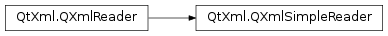

QXmlSimpleReader¶
Detailed Description¶
The
PySide2.QtXml.QXmlSimpleReaderclass provides an implementation of a simple XML parser.This XML reader is suitable for a wide range of applications. It is able to parse well-formed XML and can report the namespaces of elements to a content handler; however, it does not parse any external entities. For historical reasons, Attribute Value Normalization and End-of-Line Handling as described in the XML 1.0 specification is not performed.
The easiest pattern of use for this class is to create a reader instance, define an input source, specify the handlers to be used by the reader, and parse the data.
For example, we could use a
PySide2.QtCore.QFileto supply the input. Here, we create a reader, and define an input source to be used by the reader:xmlReader = QXmlSimpleReader() source = QXmlInputSource(filename)A handler lets us perform actions when the reader encounters certain types of content, or if errors in the input are found. The reader must be told which handler to use for each type of event. For many common applications, we can create a custom handler by subclassing
PySide2.QtXml.QXmlDefaultHandler, and use this to handle both error and content events:handler = Handler() xmlReader.setContentHandler(handler) xmlReader.setErrorHandler(handler)If you don’t set at least the content and error handlers, the parser will fall back on its default behavior—and will do nothing.
The most convenient way to handle the input is to read it in a single pass using the
PySide2.QtXml.QXmlSimpleReader.parse()function with an argument that specifies the input source:ok = xmlReader.parse(source) if not ok: print "Parsing failed."If you can’t parse the entire input in one go (for example, it is huge, or is being delivered over a network connection), data can be fed to the parser in pieces. This is achieved by telling
PySide2.QtXml.QXmlSimpleReader.parse()to work incrementally, and making subsequent calls to thePySide2.QtXml.QXmlSimpleReader.parseContinue()function, until all the data has been processed.A common way to perform incremental parsing is to connect the
readyRead()signal of anetwork replya slot, and handle the incoming data there. SeePySide2.QtNetwork.QNetworkAccessManager.Aspects of the parsing behavior can be adapted using
PySide2.QtXml.QXmlSimpleReader.setFeature()andPySide2.QtXml.QXmlSimpleReader.setProperty().xmlReader.setFeature("http://xml.org/sax/features/namespace-prefixes", True)
PySide2.QtXml.QXmlSimpleReaderis not reentrant. If you want to use the class in threaded code, lock the code usingPySide2.QtXml.QXmlSimpleReaderwith a locking mechanism, such as aPySide2.QtCore.QMutex.
-
class
PySide2.QtXml.QXmlSimpleReader¶ Constructs a simple XML reader.
-
PySide2.QtXml.QXmlSimpleReader.parse(input, incremental)¶ Parameters: - input –
PySide2.QtXml.QXmlInputSource - incremental –
PySide2.QtCore.bool
Return type: PySide2.QtCore.boolReads an XML document from
inputand parses it. Returnstrueif the parsing is completed successfully; otherwise returnsfalse, indicating that an error occurred.If
incrementalis false, this function will return false if the XML file is not read completely. The parsing cannot be continued in this case.If
incrementalis true, the parser does not return false if it reaches the end of theinputbefore reaching the end of the XML file. Instead, it stores the state of the parser so that parsing can be continued later when more data is available. In such a case, you can use the functionPySide2.QtXml.QXmlSimpleReader.parseContinue()to continue with parsing. This class stores a pointer to the input sourceinputand thePySide2.QtXml.QXmlSimpleReader.parseContinue()function tries to read from that input source. Therefore, you should not delete the input sourceinputuntil you no longer need to callPySide2.QtXml.QXmlSimpleReader.parseContinue().If this function is called with
incrementalset to true while an incremental parse is in progress, a new parsing session will be started, and the previous session will be lost.- input –
-
PySide2.QtXml.QXmlSimpleReader.parseContinue()¶ Return type: PySide2.QtCore.boolContinues incremental parsing, taking input from the
PySide2.QtXml.QXmlInputSourcethat was specified with the most recent call toPySide2.QtXml.QXmlSimpleReader.parse(). To use this function, you must have calledPySide2.QtXml.QXmlSimpleReader.parse()with the incremental argument set to true.Returns
falseif a parsing error occurs; otherwise returnstrue, even if the end of the XML file has not been reached. You can continue parsing at a later stage by calling this function again when there is more data available to parse.Calling this function when there is no data available in the input source indicates to the reader that the end of the XML file has been reached. If the input supplied up to this point was not well-formed then a parsing error occurs, and false is returned. If the input supplied was well-formed, true is returned. It is important to end the input in this way because it allows you to reuse the reader to parse other XML files.
Calling this function after the end of file has been reached, but without available data will cause false to be returned whether the previous input was well-formed or not.
© 2018 The Qt Company Ltd. Documentation contributions included herein are the copyrights of their respective owners. The documentation provided herein is licensed under the terms of the GNU Free Documentation License version 1.3 as published by the Free Software Foundation. Qt and respective logos are trademarks of The Qt Company Ltd. in Finland and/or other countries worldwide. All other trademarks are property of their respective owners.